Functions
Definition 1.3.0 (Function). Given two sets X and Y, a relation f ⊂ X x Y is called a function (also called a mapping, or simply a map) if it is single-valued; in other words, if we have
(x, y1), (x, y2) ∈ f ⇒ y1 = y2
If (x,y) ∈ f, the (unique) element y ∈ Y is denoted by y = f(x). The set dom(f) := {x ∈ X : (∃y ∈ Y) (x, y) ∈ f)} ⊂ X is called the domain of f, and the set ran(f) := {y ∈ Y : (∃x ∈ X) (x, y) ∈ f)} = {f(x) : x ∈ dom (f)} ⊂ Y is called the range of f. If dom (f) = X, then we say that f is a function from X to Y and write f : X ⟶ Y. In this case we also define f, informally, as a rule which assigns to each x ∈ X a unique y = f(x) ∈ Y. We may also use the notation x ↦ y = f(x).
Definition 1.3.1. A mapping (or a function) f from a set A to a set B is a rule that for each element of A associates a uniquely determined element of B. The set A is called domain of the function f, the set B is the codomain of the function. This is usually written as:
f: A → B
if a ∈ A then the unique element b ∈ B, which corresponds to a is denoted by f(a). We say that b = f(a) is an image of a through f, and a is a preimage or inverse image of b through f.
The set of all images of all elements a ∈ A is a subset of B called range or image of f; it is written
Im(f) or f(A).
that is
Range f = Im f = f(A) := {b ∈ B | b = f(a) for some a ∈ A} ⊆ B
The function is thus specified by three objects: the rule that establishes the correspondence, its domain, and its codomain. Changing any one of them will change the function, and it will determine whether a correspondence is a function.
Example 1.3.1. Let X = {1, 2, 3, 4} and Y = {D, B, C, E}. The law f: X → Y defined as f(1) = D, f(2) = B, f(3) = C, f(4) = C is a function. We can represent it with the following diagram
One can observe that in Example 1.3.1, there are elements in the domain that are associated with the same element of the codomain, e.g. f(3) = C, f(4) = C. This does not contradict the definition of function, because the definition does not state that the different elements of A can't be mapped to a same element of B. This is an additional property that defines injective functions.
A very simple, but nontheless important, ecxample of a function is the identity function on a set A; this is the function
idA: A ⟶ A
which leaves every element of the set A fixed, that is idA(a) = a for all elements a ∈ A.
Definition 1.3.2 A function f: X → Y is injective (or one-to-one) if, for all x1 and x2 in X, f(x1) = f(x2) implies x1 = x2. We say in this case that f is a one-to-one mapping for X to Y.
Not all the elements of B have to correspond to elements of A, but when it happens then the codomain of a function is also its range, i.e. when Im(f) = B, and the function is said to be onto or surjective.
Definition 1.3.3 A function f: X → Y is surjective (or onto) if, for all y ∈ Y, there exists an x ∈ X such that f(x) = y. Simbolically ∀y ∈ Y, ∃x ∈ X, f(x) = y. In this case we say that f maps X onto Y and we write f(X) = Y or Im f = Y.
The function f: ℝ → ℝ defined by f(x) = x2 is not surjective, since the squares of real numbers are all positives and not even injective. Notice though that injectivity and surjectivity of a function depend not only on the formula that defines the function but also on the domain and codomain: the function g: ℝ+ → ℝ, x ⟼ x2 is injective since the square root of each strictly positive real number has a unique strictly positive square roots. However it is not surjective, as f(ℝ+) ≠ ℝ; to make it surjective consider the fuction g: ℝ → ℝ+ defined by g(x) = x2 (with the restricted codomain) which is instead surjective, as f(ℝ) = ℝ+.
The function f: ℝ → ℝ defined by f(x) = x3 is injective because each cube of a real number has a unique real cube root and also surjective, hence bijective, with inverse f: ℝ → ℝ defined by f−1 = ∛x.
- The square-root function f: ℝ+ → ℝ, x ⟼ √x, is defined only on the nonnegative real numbers, is injective but not surjective as there are no negative numbers in the range;
The absolute value function f: ℝ → ℝ, x ⟼ |x|, is not injective and not either surjective as there are no negative numbers in the range;
The hyperbola f: ℝ\{0} → ℝ, x ⟶ 1/x, is not defined at 0, so it is a function from ℝ\{0} to ℝ. It is injective but not surjective to ℝ since it 1/x is never zero;
The sine function f: ℝ → [−1, 1], x ⟼ sin x, being periodic is not injective but it is surjective;
The tangent function f: ℝ\{π/2 + kπ} → [−1, 1], x ⟼ tan x; is not defined when x = πk + π/2, where the tangent function has a vertical asymptote. The tangent function is periodic and hence not injective but it is surjective;
The arctangent function x ⟼ tan−1 x, is injective when restricted to domain (−π/2, π/2) and surjective onto ℝ. As a function from ℝ to ℝ is injective but not surjective, since the range is exactly (−π/2, π/2).
The natural exponential function f: ℝ → ℝ, x ⟼ ex, is injective but not surjective as there are no negative numbers in the range;
The natural logarithm function f: ℝ+ → ℝ, x ⟼ logx, also commonly denoted ln x, is injective but not surjective onto ℝ.
A relation is a subset of a Cartesian product and a function is a relation with a special property, this justifies giving the following definition of function.
Definition 1.3.4 A function f from a set X to a set Y is a relation on X and Y, i.e., it is a subset f ⊆ X x Y that satisfies the special property that
for all x ∈ X there exists exactly one y ∈ Y such that (x,y) ∈ f
In this case we write f(x) = y instead of (x,y) ∈ f. We use the notation f: X ⟶ Y to represent a function f from X to Y. We call X the domain of the function f and Y the codomain of the function f. □
Nota bene. A function f is defined on every element of its domain X, but not every element of the codomain needs to be attained.
Example 1.3.5. Let A = {a1, a2, a3} and B = {b1, b2, b3}, and define a relation f1 ⊆ A x B by
f1 = {(a1, b1), (a2,b1), (a3, b2)}
This relation is a function since for every element x in A there is exactly one y ∈ B such that (x,y) ∈ f1. The function is f1(a1) = f1(a2) = b1 and f1(a3) = b2. While f1 is defined on all A, not every element of B is attained, as there is no x ∈ A such that f1(x) = b3. The image of A under f1 is f1 (A) = {b1,b3}. ■
Clearly, the function f1 is not not surjective and is not injective either since f1(a1) = f1(a2) and a1 ≠ a2.
Definition 1.3.6. Let S and T two subsets of A and B respectively. The inverse image or preimage of a set T ⊆ B under f, is the subset of A defined by
f−1(T) = {a ∈ A| f(a) ∈ T}
other notation include f−1[T].
The inverse image of the dicrect image, for any S ⊂ A,
f−1(f(S)) ⊇ S, equality holds if f is injective. 1.3.1
The direct image of an inverse image, for any T ⊂ B, is
f(f−1((T)) ⊇ T, equality holds if f is surjective. 1.3.2
If f: X → Y is both injective and surjective, then f is said to be injective. If f is bijective, then y = f(x) has a unique solution x ∈ X for each y ∈ Y, and the unique x is denoted by x = f−1 (y). If f is bijective, then Eqs. 1.3.1 and 1.3.2 we have
f−1(f(S)) = S, for any S ⊂ X
f(f−1((T)) = T, for any T ⊂ Y.
Definition 1.3.6. A function f: X → Y is bijective when each y ∈ Y has one counterimage in X. In this case f is both injective and surjective.
Many authors say there extists a "one to one correspondence" to connete bijection. We avoid this term, since it can be easily confused with a "one to one mapping", that is the alternative name for injective function.
Proposition 1.3.7. Consider f: A → B, then
f is injective if and only if X = f−1(f(X)) for all X ⊆ A.
f is surjective if and only if f(f−1(Y)) = Y for all Y ⊆ B.
Graph of a function
A function ca be thought of as a correspondence between sets A and B and in particular as a set of ordered pairs (a,b) where the first element a of the pair belongs to the domain A and the second element b to the codomain B. Thus each correspondence is a subset of the cartesian product A x B.
Definition 1.3.8. The subset F of A x B (i.e. the relation F from A to B) given by
F = {(a, f(a)) | a ∈ A}
is known as the graph of the function.
Note that not every correspondence can serve as the graph of a function, only a set of ordered pairs in which each element of the domain has only one element associated with it in the range is the graph of a function.
Note also that a function is a (particular) relation, while not every relation is a function. If A = B we will say there is a binary relation between the elements of A.
1.3.12 Examples.
The function f: ℝ → ℝ, defined as f(x) = x2 is not injective (for example f(1) = f(−1) = 1) and not even surjective. The function f:[0, +inf) → ℝ with f(x) = x2 is injective. Also the function h: ℕ → ℕ, defined as h(x) = x2 for each x ∈ ℕ is not surjective since there is no natural number x such that x2 = 2.
The function f: ℝ → ℝ, defined as f(x) = x3, is both injective and surjective since from x1 ≠ x2 follows x13 ≠ x23
The function f: ℝ → ℝ, defined as f(x) = ex, is injective but not surjective since no positive elements is mapped to negative values.
The function f: ℝ → ℝ, defined as f(x) = x3 − x, is surjective but not injective.
The function f: (0, +∞) → ℝ defined as f(x) = ln x, is surjective and injective.
1.3.13 Definition. Let f: A → B a function from A to B. If A1 is a subset of A, the function f implies a law such that for each element of A1 associate an element of B, hence a function from A1 to B. This function is known as restriction of f to A1 and indicated by f|A1. Its image is often time indicated by f(A1) rather than f|A1 (A1) to indicate the image restricted to A1 just to simplify the notation.
1.3.14 Theorem. Let f: A → B a function between finite sets
If f is injective, then |A| ≤ |T|;
If f is surjective, then |A| ≥ |T|;
If |A| = |T|, then f is bijective, iff, f is both injective and surjective.
Well-defined functions
The condition that a function must be well defined means that f has a definition that assigns it a unique value
a = b ⇒ f(a) = f(b)
Example 1.3.15 Let ℚ be the set of rational number. Let
f(x/y) = x + y
for any x/y in ℚ. Does this yield to a well-defined function f: ℚ → ℝ.
Solution. The answer in in the negative. For example not that 2/3 = 4/6, but
f(2/3) = 2 + 3 = 5 ≠ f(4/6) = 4 + 6 = 10
Example 1.3.16 Show that the function f: ℚ → ℚ defined by
f(x / y) = (x + y) / y
is well defined.
Solution. Let a/b = c/d ∈ ℚ. Then
f(a / b) = (a + b)/b
= a / b + b /a
= c / d + c /d
= (c + d)/d
= f(c/d)
so f is well defined. ■
Characteristic function
Notation 1.3.16 The writing “BA”, or “Fun(A,B)”, is used to indicate the set {f | f: A → B}, of all functions from A to B. Particularly the symbol 2 indicates the set of two elements {0,1}. So for example 2X denotes the totality of mappings of X into the set {0,1}. □
We are going to define an important class of functions.
Let X be a set, and let 𝓟(X) be the power set of X, the set of subsets of X. Given a subset A ∈ P(X), one can ask for each point x ∈ X whether it lies in A or not. This can be expressed by the characteristic function of the subset A.
Definition 1.3.17 Let X be a fixed set. For each subset A of X define a function χA: X → {0, 1} known as characteristic function of the subset A, (or indicator function) by the rule:
so the characteristic function of the subset A, takes every element of A into 1 and every element in the complement of A into 0. The rationale for this is that every subset A of X can be identified with it characteristic function χA.
Example 1.3.18. Let the set X = {1, 2, 3, 4, 5, 6, 7}, and let its subset A = {4, 5, 6}. The characteristic function χA: X → 2 is the following:
1 ↦ 0 2 ↦ 0 3 ↦ 0 3 ↦ 0 4 ↦ 1
5 ↦ 1 6 ↦ 1 7 ↦ 0 ■
Theorem 1.3.19. Let X a set and 2: {0,1}. There exists a bijection among 𝓟(X) and the set 2X, set of all functions from X to {0,1} i.e. f: → {0,1}.
Proof. Let A a subset of X. The mapping
θ: 𝓟(X) → 2X
maps every element A of 𝓟(X) to its characteristic function χA, is bijective. We have to prove both surjectivity and injectivity of χA. We first show that it is one-to-one. Suppose θ(A) = θ(B) where A, B ∈ 𝓟(X). We must show A = B. Let x ∈ A. Then θ(A) = χA that is θ(A) is a function from X to 2X. Let x ∈ A then χA(x) = 1, so χB(x) = 1, which means x ∈ B. Thus A ⊂ B (∀x in X we've χA(x) = 1 ⇒ χB(x) = 1, iff A ⊂ B). Similarly B ⊂ A and so A = B. Next to prove that θ is onto, let f ∈ {0,1}X. f defines a unique subset A = f−1{1} of X and it is evidently the characteristic function of the subset A of X. So f = χA = θ(A).□
Property 1.3.18. Let |A| = n and |B| = m, then BA has cardinality mn.
Proof. Every function f: A → B maps an element of A to one and only one element of B; this latter element can be chosen in m possible ways f(ai), ∀i ∈ n, so there are in total m ⋅ m ⋅ ... ⋅ m = mn functions f. □
Canonical projection
Let f: X → Y be a function between two sets. We can define a relation ρf on X as follows:
x ρf y ⇐⇒ f(x) = f(y)
It is easy to verify it is an equivalence relation: Since f(x) = f(x), x ∼ x and ∼ is reflexive. If x ∼ y, then f(x) = f(y), so f(y) = f(x) and y ∼ x; hence, ∼ is symmetric. If x ∼ y and y ∼ z, then f(x) = f(y) and f(y) = f(z), so f(x) = f(z), which implies that x ∼ z, so ∼ is transitive.
For every y ∈ Y, we have f−1 ({y}) = ∅ if y ∉ Im f otherwise f−1 ({y}) = [x], with x any element of X such that f(x) = y, and [x] is the equivalence class of x modulo ρf.
Conversely, suppose we start by an equivalence relation ρ on a set X, with X/ρ, the quotient set, that is the set of all equivalence classes, then it is defined a mapping known as canonical projection over the quotient as follows
π : X ⟶ X/ρ
a ⟼ [a]
that carries x ∈ X into the equivalence class of x, [x]. such that ρπ = ρ.
Example 1.3.20. Suppose X = {1,2,3,4,5,6,7,8,9}, Y = {a,b,c,d,e} and
i(1) = c, f(2) = b, f(3) = e,
f(4) = b, f(5) = e, f(6) = c,
f(7) = b, f(8) = c, f(9) = e.
Then A/∼ = {{1,6,8},{2,4,7},{3,9},{5}}. ■